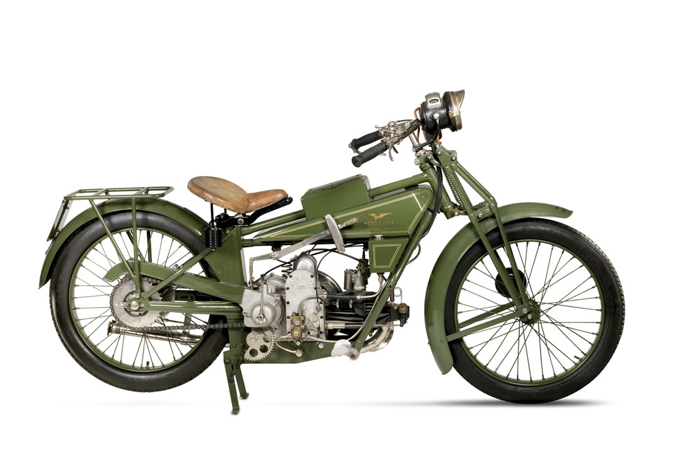

La primera motocicleta fue la G.P. (por Guzzi-Parodi). Se construye como un prototipo en el taller de motores del mecánico Giorgio Ripamonti, donde Carlo Guzzi toma sus primeras clases de mecánica y queda fascinado por las dos ruedas.El motor 4 tiempos era un monocilíndrico con 2 válvulas y 500 cc, tenía una potencia equivalente a 8 CV y podía superar la velocidad de 80 km/h.
La Moto Guzzi Motoleggera 65 es una motocicleta ligera fabricada por la empresa italiana Moto Guzzi desde 1946 hasta 1954. "Motoleggera" significa "motocicleta ligera" en alemán. Más conocida por su apodo "Guzzino" tenia un motor 2 tiempos de 63.7cc y 2 CV, alcanzando una velocidad máxima de 60 Km/h.